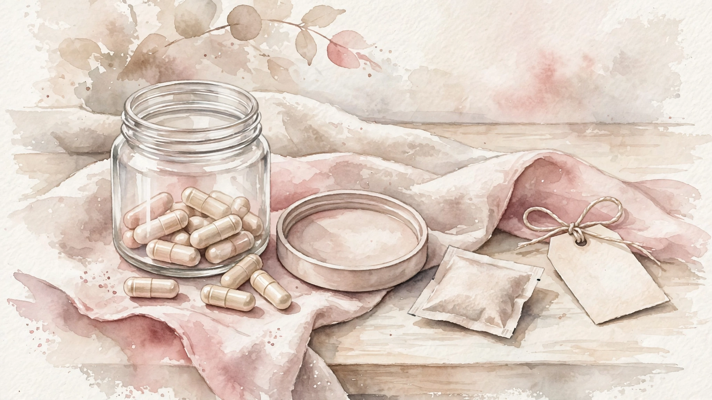

トップ ＞ インナーケア・サプリ ＞ 開封後の目安表示の見方
開封後の目安表示の見方

サプリメントの表示には、賞味期限とは別に「開封後はお早めにお召し上がりください」といった一文が添えられていることがあります。この開封後の目安表示は、読み方を知らないと見落としがちです。この記事では、開封後の目安表示の見方を整理します。
文言には、数字のあるものとないものがある
開封後の目安の文言は、大きく2種類です。「開封後○か月を目安にお召し上がりください」のように期間が数字で書かれているものと、「開封後はお早めに」のように数字のないものです。数字のある表示は、その期間が商品の前提です。数字のない表示は、具体的な日数の指定ではなく、開封したら計画的に使い切るという案内として読みます。
ドリンクタイプでは「開封後は冷蔵庫で保管し、お早めに」のように、保管方法とセットで書かれていることもあります。自分の商品の文言がどれなのかは、買ったときに一度確認しておいてください。
賞味期限との関係を知る
賞味期限は、表示された保管方法で未開封のまま保存した場合の期限として書かれていることが多いものです。つまり、開封した後は、賞味期限とは別の物差し（開封後の目安）で考える必要があります。期限までまだ余裕があっても、開封後の目安を過ぎていれば、その商品の前提からは外れています。
この2つの物差しを混同しないことが、開封後の表示の読み方の中心です。迷った場合は、販売者の窓口で「開封後の目安」を確認できます。
開封日を書く習慣が、目安を使えるものにする
開封後の目安は、開封した日が分からなければ使えません。容器や箱に、開封した日付をペンで書いておく習慣をつけてください。それだけで、「開封後○か月」が具体的な日付に変わります。
あわせて、容器の中の乾燥剤は取り除かずに入れたままにし、蓋やキャップは使うたびに閉めることが、表示の保管条件を守る基本です。複数の商品を開封している場合は、開封日の古いものから使う並べ方も有効です。開封後の目安は、小さな一文ですが、使い切りまでの計画を立てるための大切な表示です。
置き場所も、開封後に見直す
開封後の期間は、置き場所の影響をより受けやすくなります。洗面所のような湿気の多い場所に置いている場合は、開封をきっかけに、湿気の少ない場所へ移す見直しも有効です。表示の保管条件は、開封前も開封後も同じ前提ですが、開封後は容器の開け閉めの回数自体が増えるため、置き場所の条件がより大切になります。
旅行などで小分けにした分についても、元の容器の開封日とは別に、小分けにした日を目安に早めに使い切る計画にしてください。開封日メモは、容器ごとに付けるのが原則です。開封後の目安は、「期限」とは別の、もうひとつの時計です。2つの時計を両方読めるようになると、使い切りの計画が立てやすくなります。
家族で同じ商品を開封している場合は、誰がいつ開けたものかを、容器への日付書きで共有してください。開封日の分からない容器が残らないことが、開封後の管理の基本です。
開封後の目安は、まとめ買いの判断にも関わります。同時に何袋も開封してしまうと、開封後の時計が何本も並行して進むことになります。開封は1つずつ、使い切ってから次を開ける。この順番が、開封後の目安を守りやすい管理です。
容器の蓋を開けたときのにおいや、粒の様子の変化に気づいたら、開封日と保管場所を振り返ってください。判断に迷う場合は、販売者の窓口に、開封日と保管の状況を伝えて相談できます。開封日の記録は、その相談の材料にもなります。小さな日付書きが、開封後の管理の土台です。
セラフィナ「開封した日を書く、それだけで目安がぐっと使いやすくなるね」